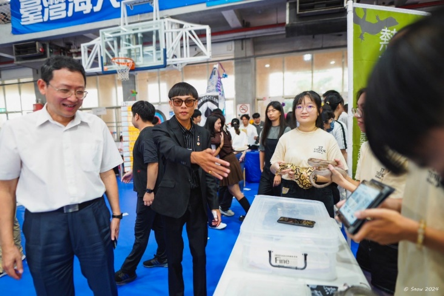

這是一篇關於「用什麼思維框架經營一個小型組織」的整理。大學社團每年換一次屆，最常見的結局是上一屆的帳號、檔案、流程跟著人一起畢業，下一屆從頭摸索。任內想處理的就是這件事：把熱研社當成一個有對外品牌、對內 SOP、可量化績效的輕量級組織來經營，讓它交接得下去。本文整理出五個從專案管理借來的角度。

# 五個專案管理角度
| 角度 | 在社團場景如何落地 |
|---|---|
| 對外品牌 | IG / Wordpress 官網 / portaly.cc 連結樹三層，IG bio 統一入口 |
| 對內 SOP | Notion 任務分配、Google Drive 分權限、社團棉花糖匿名問答 |
| 流程系統化 | Simplymeet 線上預約取代手動約時間 |
| 跨組協作 | 三校聯合線上社課（海大主辦 + 宜蘭大學蘭地爬寵社 + 嘉義大學兩棲爬蟲研究社） |
| 可量化績效 | 用 IG 後台數據（觸及 / 互動 / 粉絲）追蹤策略效果 |
這五個角度共用同一個動作：把原本靠人記、靠默契跑的事，全部外顯成可以指著看的東西。對外品牌統一到一個入口，新生不用問學長姐 IG 在哪；對內 SOP 落在 Notion 和 Drive，誰接哪一塊、權限到哪一層，攤在檯面上；流程系統化把「約時間」這種反覆出現的瑣事交給工具，省下來的力氣花回內容本身。一個 38 人的社團規模不大，可是只要它每年要換手，這些介面有沒有寫下來，決定的就是下一屆接著跑、還是重蓋一遍。
# 工時可估、平台可交接
專案管理的核心之一是「把建置成本估出來」。在熱研社的工具鏈建置中，把每個平台的建置工時列出來，方便未來社長評估維護成本：
| 工項 | 時間 |
|---|---|
| Wordpress 官網建立 | 10 小時 |
| 雲端社團帳號重辦 + 整合過去資料 | 4 小時 |
| Simplymeet / portaly / SOP / IG-FB 各一 | 2 小時 × 4 |
| 後續維護 | 4 小時 / 月 |
這份工時表是給下一屆社長的成本估算文件，讓他知道「全套建好要 22 小時、每月維護 4 小時」，用具體工時取代「應該不會太久」的憑感覺估算。
# 把社群數據當 KPI 追蹤策略效果
以前社團經營常用「我覺得這篇貼文比較好」這類主觀判斷。導入 IG Insights 後，改用三個客觀指標追蹤每月策略效果：
- 觸及 — 對外擴展成效（113 下學期累積 2,980 觸及）
- 非粉絲互動 — 對潛在新生的吸引力（+537%）
- 點擊率 CTR — 內容是否真的引發行動（9 月 18%、10 月 16%）
這三個指標每月看一次，內容策略每月微調一次，讓「下個月該發什麼」有具體依據。數據真正的用處，是它會反過來推翻你的直覺——本來以為會紅的貼文觸及平平，隨手發的那篇互動反而衝高，這種落差肉眼看不到，後台一拉就現形。
# 把跨校合作當「外部專案」處理
三校聯合線上社課用標準專案流程跑：
- stakeholder 對齊 — 主辦 + 兩個合作社團，事前 LINE 群組同步
- 時間箱 — 單場社課固定 1.5 小時
- 技術備援 — Teams 多人連線（線上格式可重複利用、無實體場地與交通成本）
- 議程公開 — 課前一天告知連結與議程，所有參與社團同步資訊
# 為什麼這套思維可遷移
這套框架的核心是「把每件事拆成可量化、可估時、可交接的單位」。社團經營看起來感性，把它換成專案管理術語就會發現：對外品牌 = stakeholder communication、對內 SOP = process documentation、跨組協作 = cross-functional alignment、社群數據 = KPI tracking。
這套詞彙在後續的工作場景（影視製作、政府補助研究、AI 工作流自動化）都繼續用得上。